第1話
水の出口
召喚当日・昼から夕方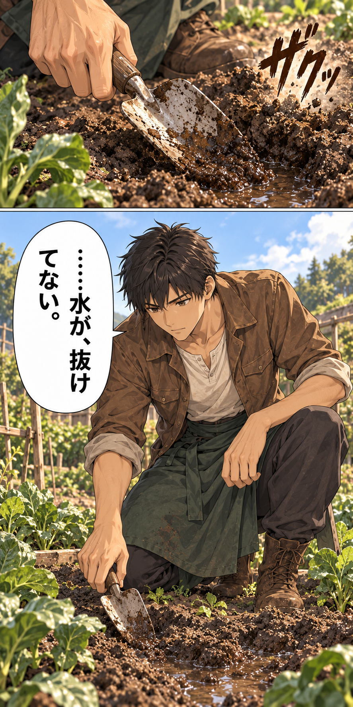
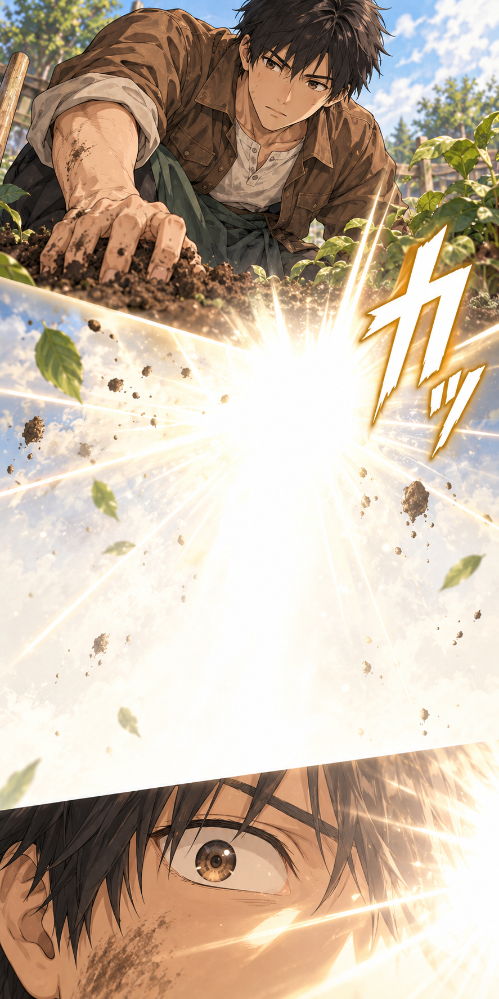
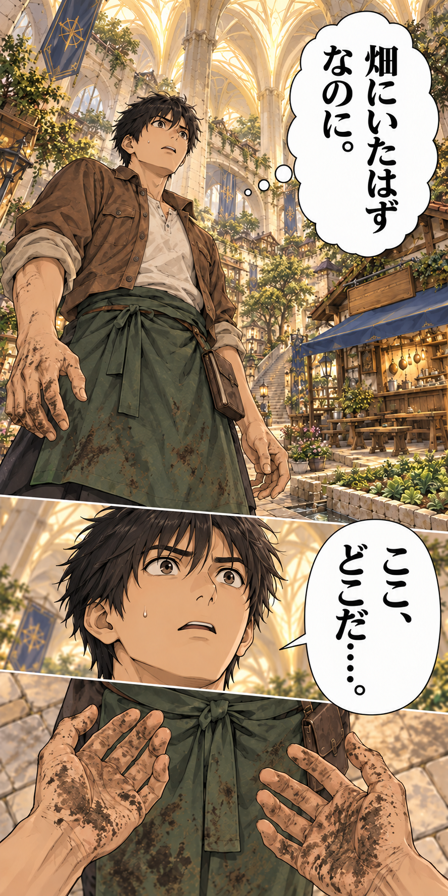
![THREE unequal successive observations inside the tower lane, no combat: upper shallow closeup of an anonymous armored guard's boots and sheathed sword passing; middle small RIGHT closeup of Kou's startled eye; lower larger wide view from behind Kou watching ordinary adventurers move under sandstone ceiling ribs. The guard wears a plain steel helmet, NOT Leon, no silver-haired face. Keep all weapons sheathed. Kou alone from main reference. コウ・心「剣……？ 本物か。」 効果音「ガチャ」：guard armor moves while walking 効果音「コツ、コツ」：guard boots on stone](art/04-strange-street.png)
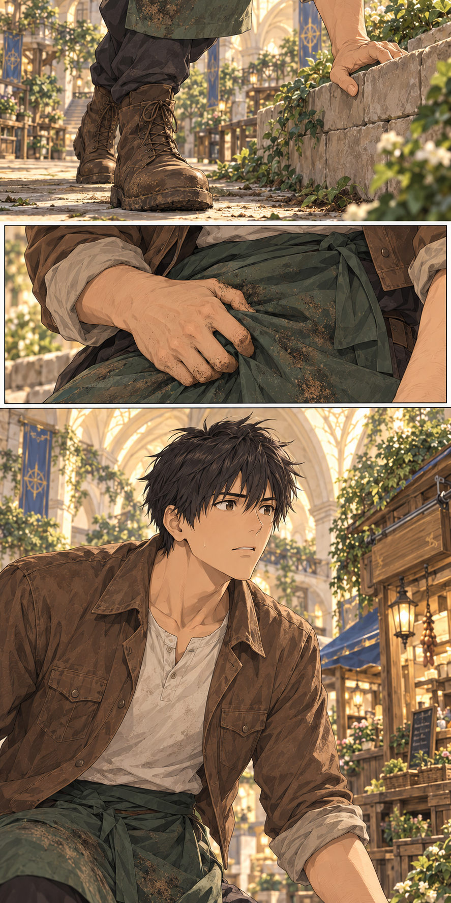
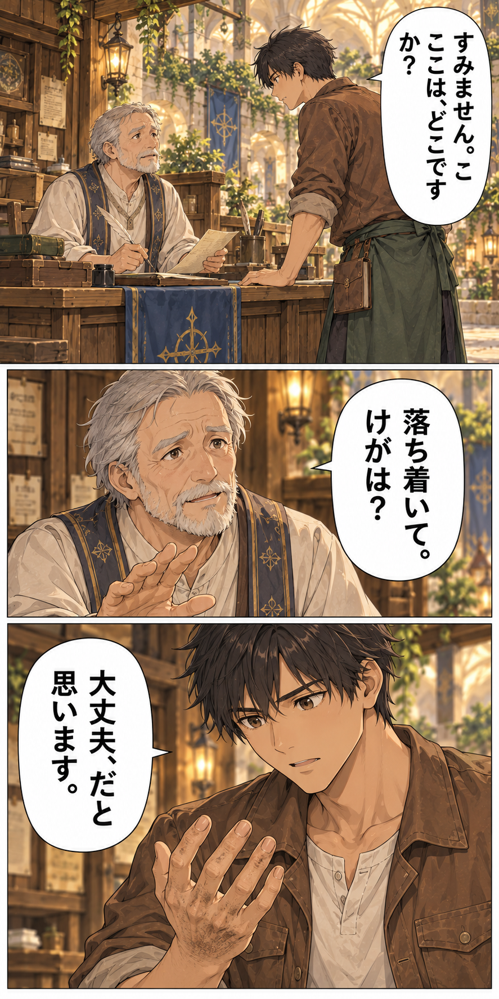
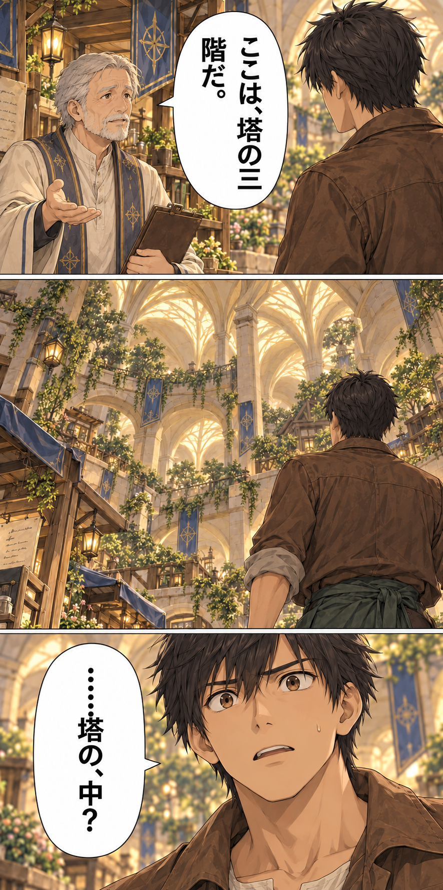
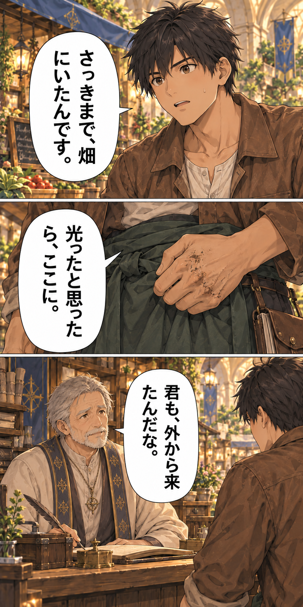


![FOUR VARIED quiet beats SAME stall BEFORE Kou leaves. Top medium Kou asks when gate opens. Next small close older beige-robed clerk says he does not know. Next larger medium clerk gestures to plain bench inside his service stall as modest overnight rest room; not inn, no luxury or money. Bottom close Kou quietly thanks him, shoulders ease slightly. No food, job, gate schedule or extra staff. Tall 1:3 canvas, four beats downwards, no uniform grid. コウ「いつ、開くんですか？」 係員「まだ、分からない。」 係員「今夜は、ここの休憩室でいい。」 コウ「……ありがとうございます。」](art/37-shelter-and-directions-clerk.png)

![THREE unequal successive CLOSEUPS after Kou leaves stall and sees shut gate. Top his hand opens EXISTING rectangular brown LEATHER TOOL SATCHEL at belt, sees worn trowel handle, small notebook and string; not coin purse. Middle boot steps on tower paving. Bottom larger hand on stomach under cream shirt and green apron. Single thought belongs to TOP tool shot. NO wallet, coin purse, money, phone, meal or Elna. Ivory space around asymmetrical hand and boot panels. コウ・心「道具しか、ない。」 効果音「コツ」：Kou boot on paving 効果音「ぐう……」：Kou stomach](art/08-hungry-walk-context.png)
![ONE long borderless vertical composition, portrait approximately 1:3, a camera journey rather than a page grid. At the top only a partial open diner window and the cream sleeve of the unseen cook's knife hand chopping on a CLEAN kitchen board; warm steam drifts downward through empty ivory space; at the bottom Kou at the lane looks toward the same blue-awning timber diner. Elna's face is not shown yet. Garden remains wilted. No harvest of new crops. 効果音「トン、トン」：cook knife tapping chopping board inside window](art/09-steam-trail.png)
![THREE unequal shots at BLUE-AWNING diner EXTERIOR. Top medium hesitant Kou RIGHT outside serving window and Elna LEFT inside, he requests WATER ONLY. Middle close Elna notices strained face and gently offers seat. Bottom shallow SILENT shot Kou lowers himself onto OUTDOOR wooden bench at window. No food, work offer, names or extra menu text. Water cup NOT delivered yet. Original identity clothes, no farm tools on food counter. Unequal situation and focused closeups, not identical boxes. コウ「すみません。水を、もらえますか。」 エルナ「大丈夫？ こっちに座って。」](art/03-diner-context.png)
![THREE quiet unequal close shots SAME diner window, Kou seated outside RIGHT, Elna standing inside LEFT. Upper shallow hands: Elna places ONE plain small brown ceramic WATER CUP on counter, clear clean water NOT stew. Her utterance from offscreen, tail UP LEFT toward mouth, not cup. Middle larger SILENT Kou holds SAME cup both hands, drinks slowly. Bottom Kou face with lowered cup gives thanks, shoulders start to release. Elna out of closeup frame, still inside. No food, job, harvest, terms or new cast. エルナ「はい。ゆっくり飲んで。」 コウ「ありがとうございます。」](art/38-water-and-thanks.png)
![THREE unequal beats SAME window, Kou seated outside RIGHT with brown WATER CUP on counter, Elna inside LEFT. Top medium gentle Elna asks about food. Middle close embarrassed Kou acknowledges no money. Bottom larger close Kou shoulder and hand near cup politely declines to avoid imposing; Elna may be offscreen. SMALL stomach sound at lower torso, not comedy. No meal served, job promise, bill, magic money, handover or bargaining. Keep cup SAME size brown shape. エルナ「何か、食べる？」 コウ「……今、お金がなくて。」 コウ「水だけで、大丈夫です。」 効果音「ぐう…」：Kou stomach under counter](art/39-cannot-pay.png)
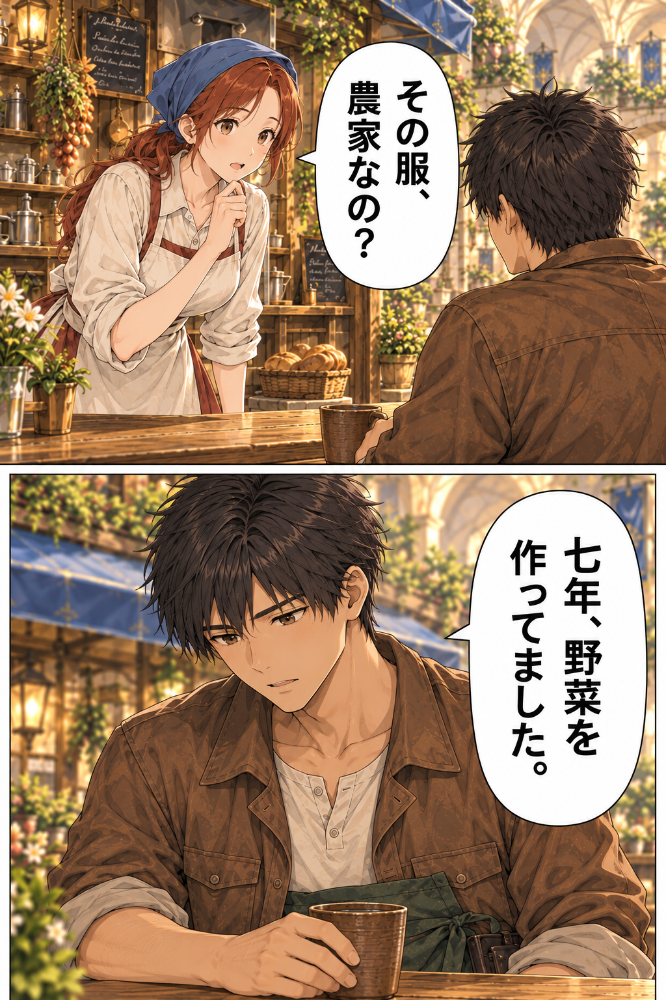
![THREE unequal beats AFTER Elna learns Kou is farmer with seven years experience. SAME diner exterior window. Upper medium Elna LEFT inside leans to point toward WILTED garden RIGHT of diner, worried request; Kou RIGHT outside still seated, looks where she points. Middle larger close sincere Elna face proposes one meal for LOOKING at plot, no cure guarantee. Bottom close tentatively hopeful Kou agrees politely, shoulder-turn prepares to stand, NOT already at roots. No finished drain, cured plants, meal, money, contract or UI. Farm tools remain at belt, no tools on counter. Large vertical glyphs, one utterance per downward shot. エルナ「裏の畑、困ってるの。」 エルナ「見てくれたら、一食出すよ。」 コウ「僕でよければ、見せてください。」](art/40-work-offer.png)

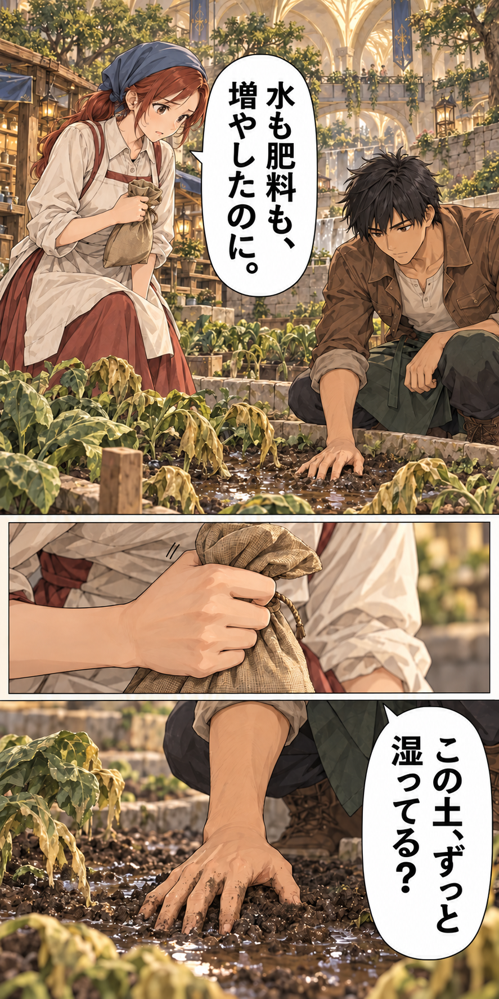
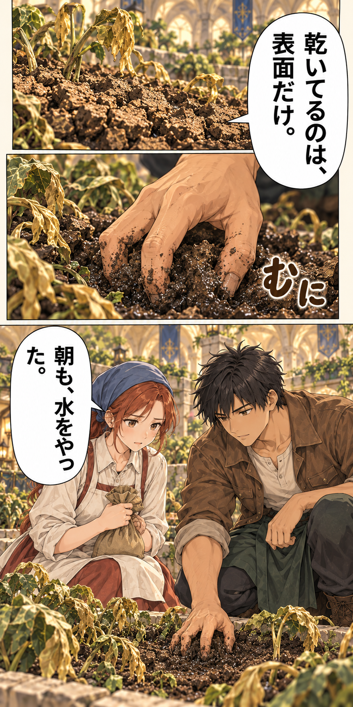
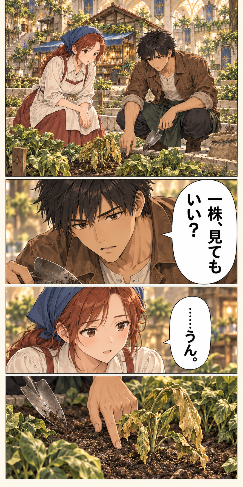
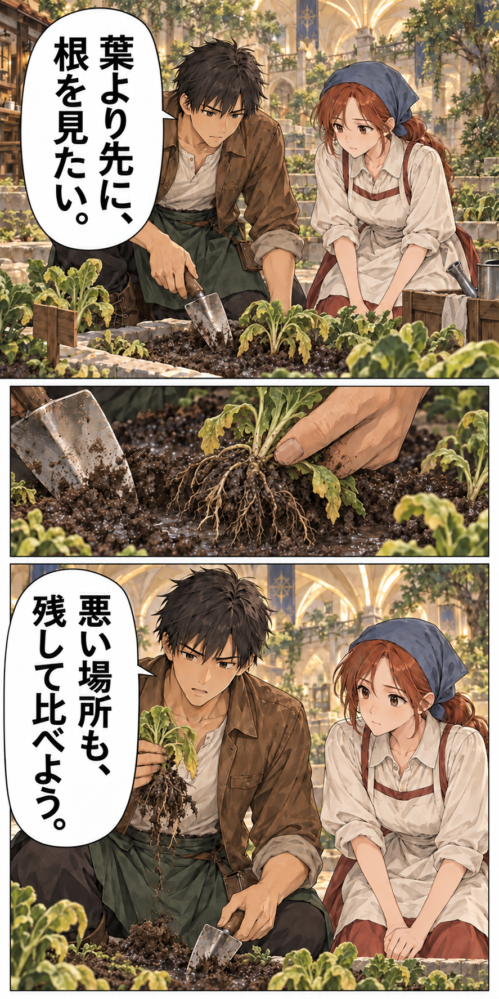
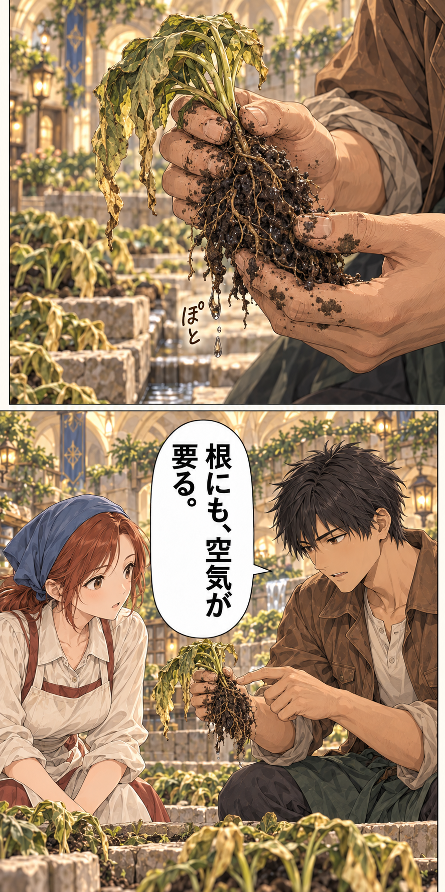
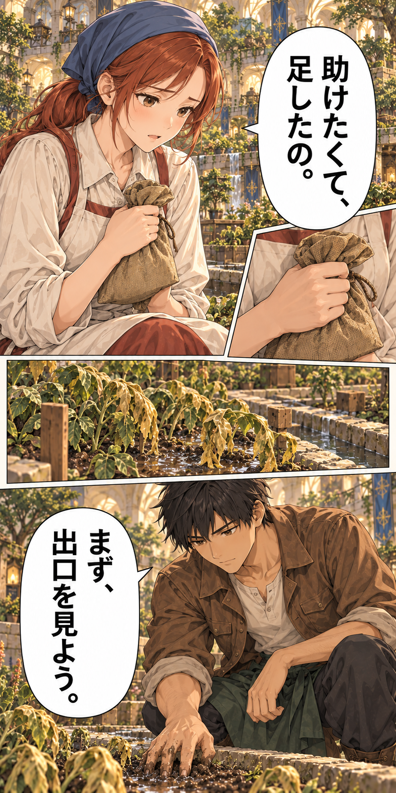

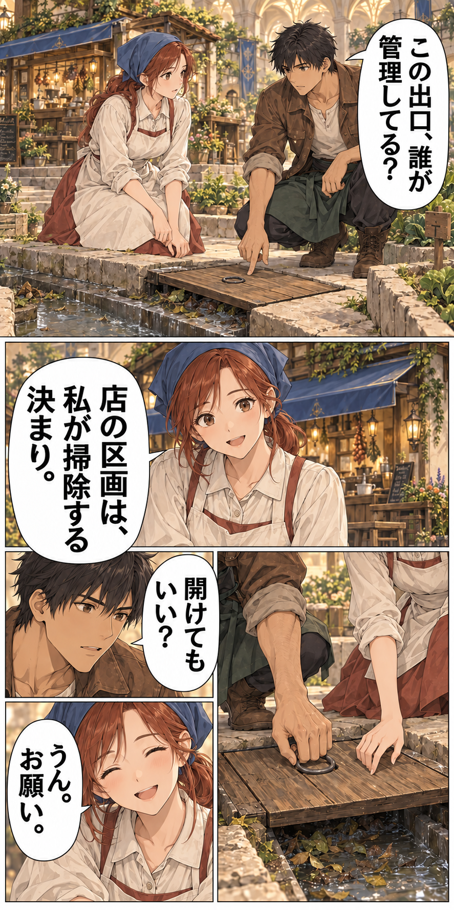


![THREE tight quick diagonally bordered action closeups, all upright lettering: top-right Kou's small hand trowel scrapes packed wet leaf litter; middle-left his hand transfers removed litter into an ordinary dirty garden bucket on paving; lower wide hand closeup loosens the remaining small twig at the outlet. Elna helps hold the lid aside. The last obstruction remains, so water is not yet gushing. No clean food bowl, no fertilizer applied. コウ「あと、少し。」 効果音「べちゃ」：wet leaves land in dirty utility bucket](art/24-clear-litter.png)


![THREE brisk unequal closeups before entering the kitchen. Top: Kou replaces the SAME wooden inspection cover over the accessible channel while water passes beneath it; the cover is not a plug in the outlet. Middle: dirty trowel and litter bucket are parked OUTSIDE beside the plot. Bottom: Kou rinses his dirty hands using a ladle of clean water over an outdoor utility basin, Elna holds a plain water jug. No brand-new high tank or filter from future episode 4. No food prep in utility basin. 効果音「コト…」：wood lid settles onto inspection frame 効果音「さらさら」：clean wash water runs over hands](art/29-put-away-and-wash.png)
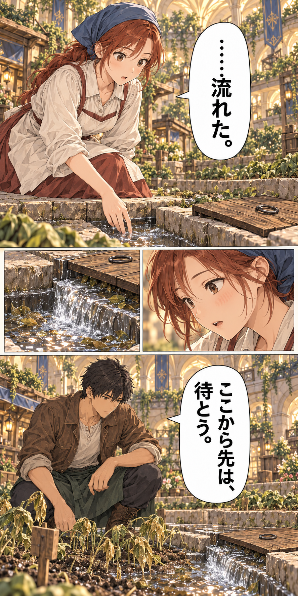
![TWO appetizing unequal closeups inside the original timber diner AFTER garden work and handwash. Upper shallow view of flame and closed/open edge of a cooking pot with steam. Lower large closeup Elna's CLEAN hand and ladle portions a stew of purchased barley, brown meat, orange root vegetable and greens into the SAME mottled brown-gray ceramic bowl of the following first-meal scene. No just-grown vegetables or farm tools on counter. Kou offscreen sitting and waiting. FOOD: smooth russet-brown gravy with a few tender beef chunks, clean carrot wedges and soft green leaves; softened purchased barley submerged, no visible bead field. Same stew from cooking to first bite; dialogue and wilted garden unchanged. 効果音「ぱち、ぱち」：small cooking fire crackles 効果音「とろっ」：stew pours from ladle into bowl](art/30-kitchen-fire-food.png)
![Three panels with final large warm scene: Elna sets a steaming barley-and-meat bowl on diner counter for Kou; closeup his rough hands near the bowl as he looks worried toward the still wilted garden; final Elna's gentle expression and Kou's relieved face in warm kitchen lamplight. Vegetables and grain are already purchased or existing, not newly grown. No miraculous lush plot. FOOD: smooth russet-brown gravy with a few tender beef chunks, clean carrot wedges and soft green leaves; softened purchased barley submerged, no visible bead field. Same stew from cooking to first bite; dialogue and wilted garden unchanged. エルナ「今日は、ここで食べて。」 コウ「まだ、畑は治ってない。」 エルナ「でも、水は動いたよ。」](art/08-first-meal-food.png)
![THREE unequal quiet final moments, not equal rectangles. Top small closeup of Kou blowing gently on a spoonful from the SAME mottled ceramic stew bowl, matching barley, brown meat, orange root and greens. Middle LARGE closeup of his softened face after tasting, his rough hands now clean, warmth rather than victory smugness. Bottom wider quiet counter scene, Elna asks from LEFT and Kou answers slightly lower RIGHT; leave airy ivory space between reactions. No crop recovery, new morning or future customer. Garden seen through doorway is still wilted. FOOD: smooth russet-brown gravy with a few tender beef chunks, clean carrot wedges and soft green leaves; softened purchased barley submerged, no visible bead field. Same stew from cooking to first bite; dialogue and wilted garden unchanged. コウ「あったかい。」 エルナ「明日も、見てくれる？」 コウ「うん。朝に。」 効果音「ふう…」：Kou gently blows steam off spoon](art/32-first-bite-and-tomorrow-food.png)
第1話















